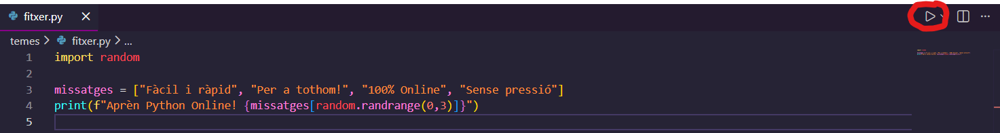
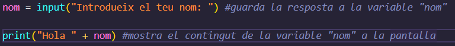
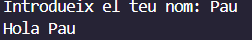

Índex
Abans de començar
Què és python?
Python és un llenguatge de programació utilitzat en bases de dades, intelingències artificials, algoritmes, eines...
Alguns cassos coneguts amb Python són:
- Algoritme de recomenació de Netflix
- Part de la base de dades de Amazon
- Llenguatge principal de ChatGPT
Com puc executar un fitxer .py?
Si tens Python instalat, pots fer doble click damunt del fitxer per executar-lo, però si ho fas des de Visual Studio Code (VSCode), pots simplement fer clic damunt de l'icona de play com es mostra a la imatge:

Errors normals
Un error comú és escriure malament el nom d'una variable o funció. Per exemple, escriure prin en lloc de print o
print(Hola) en lloc de print("Hola"). També pots trobar errors de sintaxi com oblidar un parèntesi o una coma, tot això
és completament normal, i no passa res per no recordar-se'n al principi, amb el temps es millora ràpidament.
Parlar amb el programa
Què és print?
La funció print() permet mostrar informació a la pantalla. Per exemple, si escrius
print("Hola món"), es mostrarà "Hola món" a la pantalla.
Print també pot mostrar variables o valors numèrics, però es fa sense comes: print(variable) o print(2+3)
Si vols mostrar més d'un valor, pots separar-los amb comes: print("Hola", variable)
Variables
Una variable és un nom que es pot utilitzar per guardar informació. Per exemple, si escrius
nom = "Pere", estàs guardant el text "Pere" a la variable nom. Aleshores pots utilitzar la variable nom en lloc de "Pere", les variables poden canviar de valor i contindre: textos, numeros i valors; tipo Verdader i Fals.
Què és input?
La funció input() permet al programa rebre informació de l'usuari. Per exemple, si escrius
nom = input("Com et dius? "), el programa mostrarà "Com et dius? " i esperarà que l'usuari escrigui el seu nom. El nom introduït es guardarà a la variable nom.
Pots pensar a l'input com a un print que demana informació a l'usuari.
Ara deixaré un exemple de codi per acabar-ho d'entendre:

Això és el resultat d'executar el codi de la imatge:

On he respost "Pau" quan l'input demanava el nom.
Ara pots anar a l'apartat d'exercicis i fer l'exercici 1
Tipos de variables
str
Un tipus de variable str (string) és una cadena de text. Per exemple, "Hola" o
"123" són els dos cadenes de text, la diferència de 123 i "123" són les cometes, qualsevol cosa entre cometes és una cadena de text (str)
int
Un tipus de variable int (integer) és un nombre enter. Per exemple, 42 o -7 són nombres enters.
float
Un tipus de variable float és un nombre decimal. Per exemple, 3.14 o -0.001 són nombres decimals.
bool
Un tipus de variable bool (boolean) és un valor que pot ser només True (verdader) o False (fals).
Notes
- Només es poden fer càlculs amb int i float, per molt que un str sigui "100" no el podries sumar amb res.
- Les variables de tipus str no es poden combinar amb int o float sense convertir-les primer.
- Les variables de tipus bool només poden tenir els valors True o False, són com preguntes de si o no
- L'operador
type()et permet veure quin tipus de variable tens.
Exemple de type: print(type("Hola")), mostra < class 'str'>
Exemple de type #2: print(type(42)), mostra < class 'int'>
Canvis de Tipos
Si jo vull canviar el tipus d'una variable, puc fer servir funcions com int(), float(), o str(). Per exemple:
int("123")retorna 123 (un int)float("123")retorna 123.0 (un float)str(123)retorna "123" (un str)
Ara pots anar a l'apartat d'exercicis i fer l'exercici 2
Operacións
Operadors aritmètics
Python permet fer operacions matemàtiques amb els operadors aritmètics:
+per sumar-per restar*per multiplicar/per dividir (resultat sempre float)//per dividir i obtenir només la part entera (divisió entera)%per obtenir el residu de la divisió (mòdul)**per elevar a una potència (exponent)
Exemple: print(5 + 3) mostra 8
Exemple: print(5 - 3) mostra 2
Exemple: print(5 * 3) mostra 15
Exemple: print(5 / 2) mostra 2.5
Exemple: print(5 // 2) mostra 2
Exemple: print(5 % 2) mostra 1
Exemple: print(5 ** 2) mostra 25
És important saber que també es pot fer operacions amb variebles si són de tipos int o float.
Exemple:
num2 = 3
print(num1 + num2) # mostra 8
Ara pots anar a l'apartat d'exercicis i fer l'exercici 3
Prendre decisions
Les condicions permeten prendre desicions depèn de si una expressió de comparadors i operadors lògics és True o False.
Aquest tema, en la meva opinió, és molt important però també és complex, cal dedicar-li pràctica, i recorda que en qualsevol dubte pots anar a l'apartat d'ajuda a la pàgina principal.
Comparadors
==per comparar si dos valors són iguals!=per comparar si dos valors són diferents<per comparar si un valor és menor que un altre>per comparar si un valor és més gran que un altre<=per comparar si un valor és menor o igual que un altre>=per comparar si un valor és més gran o igual que un altre
Exemple: print(5 == 5) mostra True
Exemple: print(5 != 3) mostra True
Exemple: print(5 < 3) mostra False
Exemple: print(5 > 3) mostra True
Exemple: print(5 <= 5) mostra True
Exemple: print(5 >= 6) mostra False
Operadors lògics
andper combinar dues condicions i que totes dues siguin Trueorper combinar dues condicions i que alguna sigui Truenotper negar una condició
Exemple: print(5 > 3 and 5 < 10) mostra True
Exemple: print(5 > 3 or 5 > 10) mostra True
Exemple: print(not(5 > 3)) mostra False
Tipus de condicions
Les condicions són preguntes que es fan a l'ordinador per veure si una expressió és True o False, i al ser True s'executa el codi dins de la condició.
N'hi han tres:
- if
- elif
- else
If
If significa "Si això és veritat, fes això", i és una condició que permet executar codi només si una expressió és True.
print("5 és més gran que 3") #aquesta l'ínea s'executarà perquè 5 > 3 és True
Elif
Elif significa sinó i permet afegir condicions addicionals.
if num > 10:
print("num és més gran que 10")
elif num == 10:
print("num és igual a 10") #aquesta l'ínea s'executarà perquè num == 10 és True
Else
Else vol dir "Si cap de les anteriors és certa", i és una condició que s'executa si cap de les condicions anteriors és True, no cal posar condició.
if num > 10:
print("num és més gran que 10")
elif num == 10:
print("num és igual a 10")
else:
print("num és menor que 10") #aquesta l'ínea s'executarà perquè cap de les condicions anteriors és True
Aspectes importants abans de continuar
- L'igual de les condicions, o sigui, per dir això en Python s'utilitza
==i no=. - Els elif es poden posar més d'una vegada per "bloc de condicions" i el bloc s'atura quan es troba una condició que és True, com es mostra en el següent exemple:
- S'ha de posar dos punts després de la condició (if, elif, else)
- El codi a executar ha d'estar indentat amb 4 espais o un tabulador
if num < 5:
print("num és més gran que 5") # no s'executarà perquè num < 5 és False
elif num > 8:
print("num és més gran que 8") # s'executarà perquè num > 8 és True
elif num == 10:
print("num és igual a 10") # no s'executarà perquè el bloc de condicions ja s'ha aturat a la línea anterior
Ara pots anar a l'apartat d'exercicis i fer l'exercici 4
També estàs preparat per fer el teu primer projecte, ves a l'apartat de projectes i fes el primer (opcional).
Repetir coses
Què és while?
While és un bucle que es repeteix mentre una condició sigui certa o fins que s'aturi amb la funció break.
Per exemple, el següent codi mostrarà els números del 1 al 5:
while num <= 5:
print(num)
num += 1 # això és el mateix que num = num + 1
Bucles infinits
Si fas un bucle while amb una condició que sempre és certa, el bucle serà infinit.
La millor forma és dir directament while True: com en el següent exemple:
print("Això es repetirà infinitament")
Break
Sovint voldràs aturar el bucle infinit abans de que acabi amb el teu ordinador, per a això, s'utilitza break aquí un exemple:
resposta = input("Vols aturar el bucle? (sí/no) ")
if resposta == "sí":
break # això atura el bucle
Ara pots anar a l'apartat d'exercicis i fer l'exercici 5
Repetir amb control
Què fa for?
Un for serveix per repetir una cosa varies vegades, es pot traduïr al català com: "Fes això per cada element"
Comptar números
per comptar numeros utilitzem range(), així:
print(numero)
range(1,6) vol dir de l'1 al 5 (el número final no s'inclou mai)
Sortida:
2
3
4
5
Recórrer una paraula
print(lletra)
Agafa cada lletra una per una i les mostra a la pantalla.
Sortida:
o
l
a
Idea principal
for funciona així:
acció
Python agafa cada element d'"alguna cosa" i fa l'acció.
Ara pots anar a l'apartat d'exercicis i fer els exercicis 6 i 7
Aleatorietat
Per què serveix random?
Random serveix per fer que el programa tingui "sort", o sigui, que no sempre faci el mateix. Això va perfecte per jocs (daus, monedes, enemics, endevinar...).
Importar random
Per utilitzar-ho, primer s'ha d'importar:
randint()
randint(a, b) dona un número aleatori entre a i b (aquí sí que s'inclou el final).
num = random.randint(1, 6)
print(num) # com un dau (1 a 6)
Exemples ràpids
Moneda (cara o creu):
tirada = random.randint(0, 1)
if tirada == 0:
print("Cara")
else:
print("Creu")
Try
Try no és sobre aleatorietat, però en aquest punt el necessites, serveix per evitar errors.
Quan l'usuari escriu alguna cosa, pot escriure text en comptes d'un número, i això pot fer que el programa peti. Amb try podem provar un codi, i si falla, fem una altra cosa.
La idea és:
# codi que pot donar error
except:
# què fer si hi ha error
Exemple
Sense try, això pot donar error si l'usuari escriu text:
print(numero)
Si l'usuari escriu "hola", el programa es tanca amb un error.
Amb try ho podem controlar:
numero = int(input("Introdueix un número: "))
print(numero)
except:
print("Això no és un número!")
Ara, si l'usuari escriu text, el programa no peta, simplement mostra el missatge.
Important: try no arregla l'error, només evita que el programa es tanqui.
Ara pots anar a l'apartat d'exercicis i fer l'exercici 8
Ja ets capaç de fer el teu primer joc, pots veure-ho al projecte 2.
Llistes
Què és una llista?
Una llista és com una variable, però en comptes de guardar una sola cosa, en guarda moltes. Per exemple: noms, puntuacions, objectes d'un inventari...
Crear una llista
print(inventari)
append()
append() afegeix una cosa al final:
inventari.append("poció")
print(inventari) # ["espasa", "poció"]
remove()
remove() elimina un element (si existeix):
inventari.remove("poció")
print(inventari) # ["espasa"]
len()
len() diu quants elements hi ha:
print(len(inventari)) # 3
Recórrer una llista
Amb un for pots veure cada element:
for item in inventari:
print(item)
Ara pots anar a l'apartat d'exercicis i fer l'exercici 9
Funcions
Per què serveixen les funcions?
Les funcions serveixen per no repetir codi i tenir-ho tot més ordenat. És com posar un tros de codi dins d'un "botó" que pots tornar a usar quan vulguis.
def
Per crear una funció s'utilitza def:
print("Hola!")
saludar() # crida la funció
Paràmetres
Un paràmetre és informació que li passes a la funció:
print("Hola", nom)
saludar("Pau") #Hola Pau
saludar("Laia") #Hola Laia
return
return serveix per tornar un resultat (en comptes de només fer print):
return a + b
resultat = suma(3, 4)
print(resultat) # 7
Exemples típics en jocs
Funció de dany:
return atac * 2
Funció per mostrar un menú (més endavant ho faràs complet):
print("1. Jugar")
print("2. Inventari")
print("3. Sortir")
Ara pots anar a l'apartat d'exercicis i fer l'exercici 10
Texts intel·ligents
Per què és important?
En jocs de text, l'usuari escriu de mil maneres diferents ("SI", "sí", "Si ", etc). Aquí aprendràs a netejar i comparar texts bé.
.lower()
Passa el text a minúscules, per exemple si introdueixes "Hola", i fas un .lower(), el text pasara a ser "hola".
resposta = resposta.lower() #Sí -> treus majúscules -> sí
print(resposta) # sí
.strip()
Moltes vegades l'usuari pot deixar espais al principi o final de una paraula o frase.
Per exemple, si introdueixo " Marc " en el següent codi, suprimirà els espais al principi i final.
nom = nom.strip() #"Marc"
Important: només elimina espais al principi i final, no els del mig, per exemple a la frase "Em dic Maties ", té
un espai al final, però també entre les paraules, anem a veure que passa si utilitzem .strip()
frase.strip() # "Em dic Maties"
in
in comprova si una cosa és dins d'un text:
print("espasa" in frase) # True
S'utilitza sobretot a condicións if:
if "gana" in frase:
print("Menjant...")
menjar()
f-strings
Per ajuntar text i variables de forma còmoda:
edat = 15
print(f"Em dic {nom} i tinc {edat} anys") #Em dic Pau i tinc 15 anys
Ara pots anar a l'apartat d'exercicis i fer l'exercici 11
Error i debug
Errors típics
Els errors són normals. No vol dir que siguis dolent, vol dir que estàs programant.
- SyntaxError: falta un
:, un parèntesi, cometes, etc. - NameError: has escrit un nom malament (variable o funció).
- TypeError: estàs barrejant tipus (ex: sumar text amb número).
- ValueError: intentes convertir una cosa que no es pot (ex:
int("hola")).
Exemple d'error:
Aquest és el meu codi, és per veure si algú és major d'edat:
if edat >= 18:
print("Ets major d'edat")
Al executar-lo a VSCode em surt un error després de l'input.
if edat >= 18:
^^^^^^^^^^
TypeError: '>=' not supported between instances of 'str' and 'int'
- File "c:\Ruta_del_projecte\fitxer.py" → ruta del fitxer on es troba l'error.
- line 3 → línea on passa l'error, en el exemple, és la 3 (if edat >= 18:)
- if edat >= 18: → tant això com les fletxetes que ho apunten a la línea d'abaix, indiquen exactament què ha fallat, normalment, en vermell.
-
TypeError: '>=' not supported between instances of 'str' and 'int'
- TypeError → estem barrejant dos tipos de variables (int,str,bool o float)
- '>=' → aquí ens diu que no es pot fer la comparació de més gran o igual que, debut a la barreja de variables.
- not supported between instances of 'str' and 'int' → ara ens diu els dos tipos de variables que hem barrejat
Ara sabem que la forma d'arreglar el codi és assegurant-nos de que les dos variables són compatibles.
Codi arreglat:
if edat >= 18: #18 ja és un int, no cal fer res.
print("Ets major d'edat")
Llegir el missatge d'error
El missatge d'error normalment diu:
- Quin tipus d'error és
- En quina línia passa
- Quina part no li agrada a Python
Debug ràpid amb print()
Quan no saps què passa, posa print() per veure valors:
print("num val:", num)
num = num + 1
print("ara num val:", num)
Ara pots anar a l'apartat d'exercicis i fer l'exercici 12
Menús i programa complet
Què és un menú?
Un menú és una forma d'ajuntar-ho tot en un sol programa: l'usuari tria una opció i el programa fa una cosa.
Menú amb while True
La idea és repetir el menú fins que l'usuari digui sortir:
print("1. Jugar")
print("2. Inventari")
print("3. Sortir")
opcio = input("Tria una opció: ")
if opcio == "1":
print("Comença el joc...")
elif opcio == "2":
print("Mostrant inventari...")
elif opcio == "3":
break
else:
print("Opció incorrecta")
Important
- Les opcions han de ser clares i numerades.
- Si l'usuari posa una cosa rara, el programa no ha de petar: posa un
else. - Per sortir bé, normalment fem
break.
Ara pots anar a l'apartat d'exercicis i fer l'exercici 13
I ja tens base per començar el joc final (ves a l'apartat de projectes)